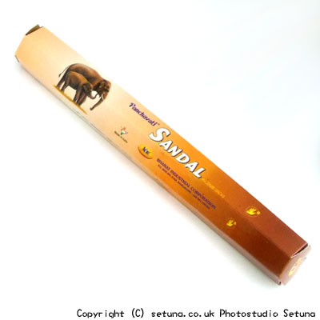

そのままだとオールスパイスによく似たような甘い匂いがします。
どちらかというとスパイシーな感じでサンダルはあまり感じませんね。
火を点けてもやはり、オールスパイスのような香りが強く香り続けます。
よく嗅ぎ分けると、かすかにサルファーの匂いやバチュリの匂いもします。実に複雑な香りです。
燃え進むにつれて色々な香りが次々と顔を出し時にはめまぐるしく、時にはゆっくりと移り変わっていきます。
まるでお香自体がこちらに語りかけて来ている様に感じる時があるくらいです。
燃え尽きた時はサンダルの香りだけが強めに残りますが他の香りも中を漂う様にゆっくりと香り続けます。
少しづつ色々な香りが動く様にだんだんと薄れてゆきます。
ドラマチックなお香とでも云えばいいのでしょうか。
インド香の奥深さを感じるお香ですね。
ゴキブリ等の害虫除けとして効果を発揮します。
